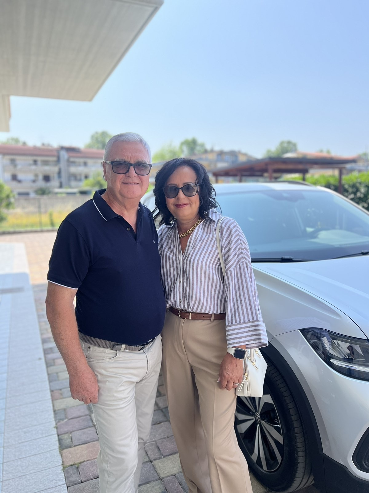

Storia e Radici
Due secoli
di acqua e farina
Ogni pietra di questo mulino porta il peso della storia. L'acqua del Nora ha mosso le macine per generazioni, scandendo il ritmo della vita contadina abruzzese. Oggi scorre ancora, ma porta con sé il racconto di chi è venuto prima.
— Gabriele Brandolini, quarta generazione

Nei primi anni dell'Ottocento, la famiglia Brandolini acquisisce il vecchio mulino ad acqua sul torrente Nora, avviando una storia di lavoro e dedizione durata oltre due secoli.
Per generazioni le macine macinano il grano delle famiglie di Vicoli e dei borghi vicini. La ruota d'acqua non si ferma mai — il suono del Nora si fonde con quello della farina.
La struttura viene accuratamente restaurata mantenendo intatti tutti i macchinari originali: macine, tramogge e ruota idraulica diventano un piccolo museo vivente visitabile dagli ospiti.
Cinque camere, piscina, giardino e il Parco fluviale del Nora alle porte. La storia si respira in ogni angolo, ma il comfort è quello di oggi.
Il Mulino Brandolini si trova a Vicoli, piccolo borgo della provincia di Pescara incastonato tra le colline abruzzesi. A poca distanza sorge il borgo di Vicoli Vecchio, racchiuso attorno all'antico castello su un panoramico poggio — raggiungibile a piedi attraverso un sentiero che porta al Parco Territoriale Attrezzato di Vicoli.
Nelle vicinanze, la Riserva regionale Voltigno e Valle d'Angri, area naturale protetta all'interno del Parco nazionale del Gran Sasso-Monti della Laga. E nei dintorni, l'Abbazia di San Bartolomeo, uno dei monumenti più pregevoli dell'arte medievale abruzzese cistercense.
A 15 minuti si trovano le piste di sci di fondo dello Sci Club Villa Celiera. La cucina del territorio — arrosticini, pecora alla "callara", pecorino stagionato — si assaggia negli agriturismi della zona che Gabriele sarà felice di consigliarvi.

"Siamo lieti di ospitarvi in questo piccolo gioiello storico e siamo sempre a vostra disposizione per rendere la vostra esperienza indimenticabile."
Gabriele Brandolini — Proprietario